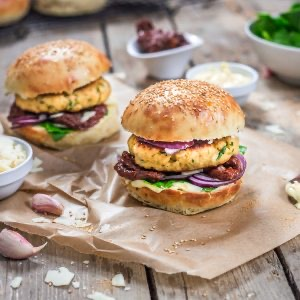
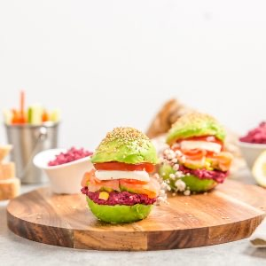
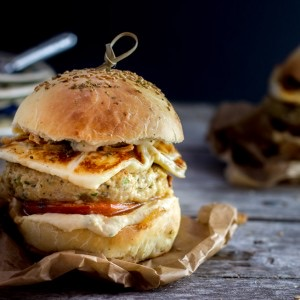
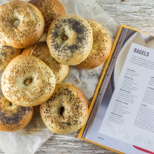
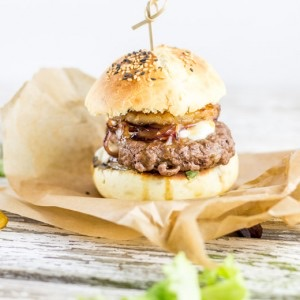
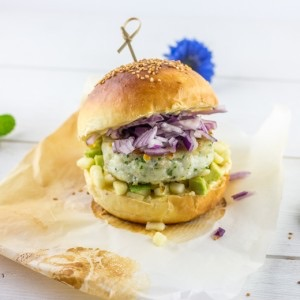
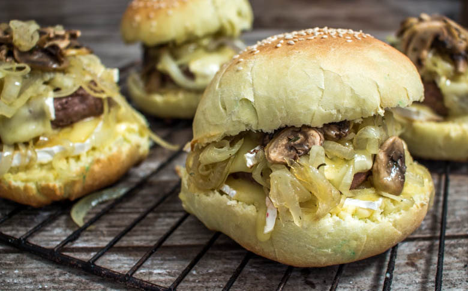
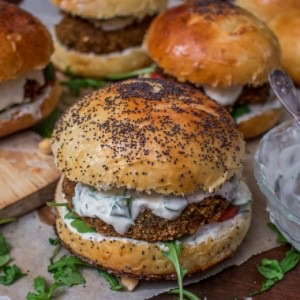
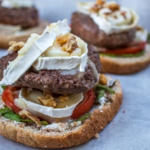

Hamburgers (25 recettes)
 3 avis
3 avis
HamburgersRecettes VégétariennesSalé
Burgers végétariens et steak de lentilles
8 avis
BrunchHamburgersRecettes Végétariennes
Hot-dog végétariens (aux champignons)
15 avis
HamburgersSalé
Burger de poulet effiloché sauce cacahuète
 16 avis
16 avis
ApéritifBoulangeBrunch
Burger végétarien aux haricots rouges

8 avisHamburgersSalé
Burger de poulet aïoli et pousses d’épinard
34 avis
HamburgersSalé
Burger Tartiflette
20 avis
HamburgersSalé
Burger au champignon

37 avisHamburgersRepas LightSalé
Avocado burger
 9 avis
9 avis
HamburgersNoëlSaint-Valentin
Burgers tournedos Rossini
 37 avis
37 avis
HamburgersSalé
Burger bacon
17 avis
HamburgersSalé
Burger rose et steak végétarien
 21 avis
21 avis
HamburgersSalé
Guacamole Burger

22 avisHamburgersRepas du mondeSalé
Burger oriental

41 avisBoulangeHamburgersRepas du monde
Bagels maison
 47 avis
47 avis
BoulangeHamburgersSalé
Pain hamburger homemade

68 avisHamburgersSalé
Teriyaki burger

43 avisDe la merHamburgersSalé
Burger marin

24 avisHamburgersSalé
Burger champignon & bun maison
HamburgersSalé
Burger champignon & bun maison

22 avisHamburgersRepas du mondeSalé
Falafel burger ou burger végétarien qui fait du bien
 16 avis
16 avis
ApéritifDe la merHamburgers
Minis hamburgers saumon-aneth-cream cheese

12 avisHamburgersSalé
Hamburger express chèvre miel
16 avis
HamburgersSalé
Hamburger sauce poivrons & steak mozza
2 avis
HamburgersSalé
Hamburger Raclette
 45 avis
45 avis
BoulangeHamburgersSalé